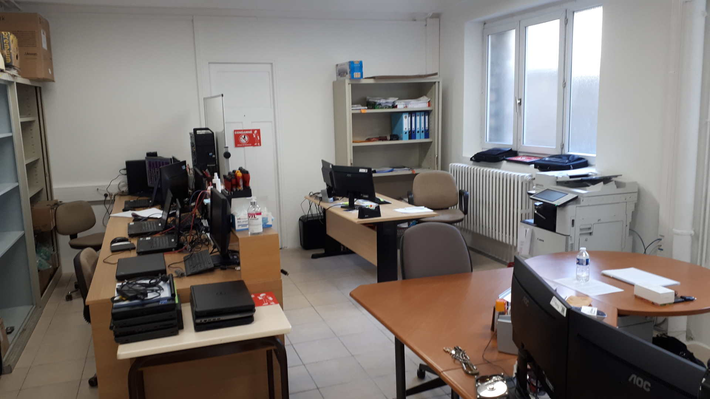

Section des systèmes d'information et de communication

Missions :
La Section des Systèmes d'Information et de Communication s'occupe de tout le matériel informatique et de communication de l'ensemble des unités GGMARMEDI : Assure : - La répartition, l'attribution et l'installation du matériel renouvelé ou nouvellement affecté, - La maintenance matérielle des différents matériels, - Le maintien en condition opérationnelle (MCO) des systèmes, - La surveillance du bon fonctionnement des différents réseaux, - La MCO et la mise à disposition de matériel lors des éventuelles crises.
Moyens :
- Divers : - Informatique (ordinateurs, logiciels...). - Matériel de réparation (tourne-vis, câbles de rechange...)(en théorie).
Effectifs :
- 1 personnel : 1 Adjudant, chef de service.